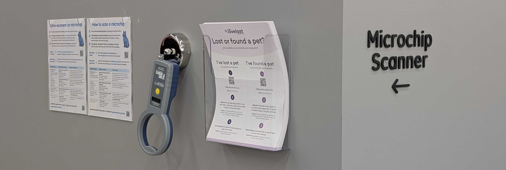

Use this form to request assistance with spay/neuter, TNR (trap-neuter-return), rescuing cats or kittens, or surrendering cats or kittens.
Bay Area Cats is passionate about reuniting lost pets with their owners. That's why we use Petco Love Lost, which uses facial recognition software to report or search for lost or found pets. It's free and easy to use.

Email us at info@bayareacats.org with any questions or submit the form above.